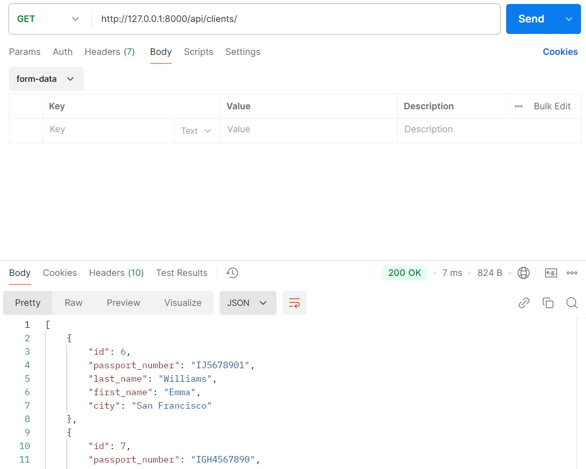
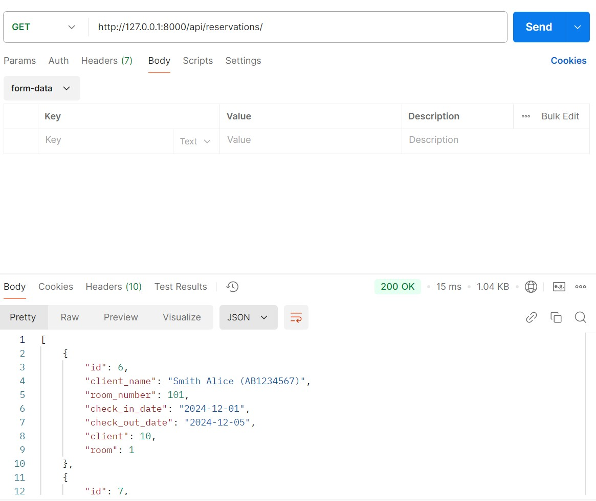

Отчет по лабораторной работе №3
Цель работы
Овладеть практическими навыками и умениями реализации web-сервисов средствами Django.
Задача лабораторной работы
Реализовать сайт, используя фреймворк Django 3, Django REST Framework, Djoser в соответствии с вариантом задания лабораторной работы.
Зададние 1
Создать программную систему, предназначенную для администратора гостиницы.
Такая система должна обеспечивать хранение сведений об имеющихся в гостинице номерах, о проживающих в гостинице клиентах и о служащих, убирающихся в номерах. Количество номеров в гостинице известно, и имеются номера трех типов: одноместный, двухместный и трехместный, отличающиеся стоимостью проживания в сутки. В каждом номере есть телефон.
О каждом проживающем должна храниться следующая информация: номер паспорта, фамилия, имя, отчество, город, из которого он прибыл, дата поселения в гостинице, выделенный гостиничный номер.
О служащих гостиницы должна быть известна информация следующего содержания: фамилия, имя, отчество, где (этаж) и когда (день недели) он убирает. Служащий гостиницы убирает все номера на одном этаже в определенные дни недели, при этом в разные дни он может убирать разные этажи.
Работа с системой предполагает получение следующей информации: - о клиентах, проживавших в заданном номере, в заданный период времени; - о количестве клиентов, прибывших из заданного города, - о том, кто из служащих убирал номер указанного клиента в заданный день недели, - сколько в гостинице свободных номеров; - список клиентов с указанием места жительства, которые проживали в те же дни, что и заданный клиент, в определенный период времени.
Администратор должен иметь возможность выполнить следующие операции: - принять на работу или уволить служащего гостиницы; - изменить расписание работы служащего; - поселить или выселить клиента.
Необходимо предусмотреть также возможность автоматической выдачи отчета о работе гостиницы за указанный квартал текущего года. Такой отчет должен содержать следующие сведения: - число клиентов за указанный период в каждом номере; - количество номеров не каждом этаже; - общая сумма дохода за каждый номер; - суммарный доход по всей гостинице.
Модели данных (models.py):
from django.contrib.auth.models import AbstractUser
from django.db import models
class User(AbstractUser):
is_admin = models.BooleanField(default=False)
REQUIRED_FIELDS = ['last_name', 'first_name']
class Room(models.Model):
SINGLE = 'Single'
DOUBLE = 'Double'
TRIPLE = 'Triple'
ROOM_TYPES = [
(SINGLE, 'Single'),
(DOUBLE, 'Double'),
(TRIPLE, 'Triple'),
]
id = models.AutoField(primary_key=True)
number = models.PositiveIntegerField(unique=True)
floor = models.PositiveIntegerField()
type = models.CharField(max_length=10, choices=ROOM_TYPES)
price_per_day = models.DecimalField(max_digits=10, decimal_places=2)
phone = models.CharField(max_length=15, blank=True)
is_occupied = models.BooleanField(default=False)
def __str__(self):
return f"Room {self.number} ({self.type})"
class Client(models.Model):
id = models.AutoField(primary_key=True)
passport_number = models.CharField(max_length=15, unique=True)
last_name = models.CharField(max_length=50)
first_name = models.CharField(max_length=50)
city = models.CharField(max_length=50)
def __str__(self):
return f"{self.last_name} {self.first_name} ({self.passport_number})"
class Staff(models.Model):
id = models.AutoField(primary_key=True)
last_name = models.CharField(max_length=50)
first_name = models.CharField(max_length=50)
profession = models.CharField(max_length=50)
def __str__(self):
return f"{self.last_name} {self.first_name} ({self.profession})"
class CleaningSchedule(models.Model):
id = models.AutoField(primary_key=True)
staff = models.ForeignKey(Staff, on_delete=models.CASCADE, related_name="schedules")
floor = models.PositiveIntegerField()
day_of_week = models.CharField(max_length=15)
client = models.ForeignKey(Client, on_delete=models.CASCADE, related_name="cleaning_schedules", null=True,
blank=True)
def __str__(self):
return f"Floor {self.floor} ({self.day_of_week})"
class Reservation(models.Model):
id = models.AutoField(primary_key=True)
client = models.ForeignKey(Client, on_delete=models.CASCADE, related_name="reservations")
room = models.ForeignKey(Room, on_delete=models.CASCADE, related_name="reservations")
check_in_date = models.DateField()
check_out_date = models.DateField()
def __str__(self):
return f"Reservation: {self.client} - Room {self.room.number}"
class Report(models.Model):
id = models.AutoField(primary_key=True)
quarter = models.PositiveIntegerField()
year = models.PositiveIntegerField()
room = models.ForeignKey(Room, on_delete=models.CASCADE, related_name="reports")
total_clients = models.PositiveIntegerField()
total_income = models.DecimalField(max_digits=10, decimal_places=2)
def __str__(self):
return f"Report for {self.quarter} quarter {self.year} - Room {self.room.number}"
- User: Наследуется от AbstractUser и расширяет стандартную модель пользователя в Django
- is_admin: Булево поле, обозначающее, является ли пользователь администратором.
-
REQUIRED_FIELDS: Указывает обязательные поля при создании пользователя (имя и фамилия).
-
Room: Модель для описания номера в отеле
- number: Уникальный номер комнаты.
- floor: Этаж, на котором находится номер.
- type: Тип номера (одноместный, двухместный, трехместный). Выбор реализован через choices.
- price_per_day: Цена за день проживания.
- phone: Номер телефона для связи, если доступен.
- is_occupied: Указывает, занят ли номер.
-
Метод str:Возвращает удобное текстовое представление, например: Room 101 (Single).
-
Client: Представляет информацию о клиентах отеля
- passport_number: Уникальный номер паспорта клиента.
- last_name и first_name: Имя и фамилия клиента.
- city: Город проживания.
-
Метод str:Возвращает текстовое представление
-
Staff: Модель для хранения данных о сотрудниках
- last_name и first_name: Имя и фамилия сотрудника.
- profession: Профессия сотрудника (например, администратор, уборщик).
-
Метод str: Возвращает строку, например
-
CleaningSchedule: График уборки для сотрудников
- staff: Ссылка на сотрудника (связь через ForeignKey).
- floor: Этаж, который должен убирать сотрудник.
- day_of_week: День недели уборки (например, "Monday").
- client: Опциональная ссылка на клиента, если уборка связана с конкретным гостем.
-
Метод str: Возвращает строку, например: Floor 2 (Monday)
-
Reservation: Модель для управления бронированием
- client: Ссылка на клиента, который сделал бронирование.
- room: Ссылка на забронированный номер.
- check_in_date и check_out_date: Даты заезда и выезда.
-
Метод str: Возвращает текст о бронировании
-
Report: Модель для хранения отчетов о доходах
- quarter и year: Квартал и год отчета.
- room: Ссылка на номер, по которому составлен отчет.
- total_clients: Количество клиентов за отчетный период.
- total_income: Общий доход за период.
Эндпоинты
Информация о пользователях: 
Информация о бронировании: 
Отчет за квартал:
.jpg)